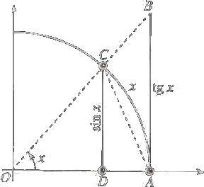

Trigonometry
Let θ be an acute angle in a right triangle, then we can define triogonometric functions as follows:
We can verify that:
La parola tangente deriva dal verbo latino tangere (con l'accento sulla a) e si ottiene dividendo il seno per il coseno di un angolo, geometricamente se si prende un cerchio di raggio uno, si disegna un angolo x e si prolunga uno dei due raggi dell'angolo fino a incontrare la tangente (appunto…) al cerchio che passa dall'altro raggio si ottiene un segmento la cui misura è appunto la tangente dell'angolo.
Trigonometric Formulas
Some useful trigonometric formulae are given as follows:
sin(−x) = − sin x
cos(−x) = cos x
tg(−x) = −tg (x)
Angoli Complementari
sin (π/2 ± x) = ∓ cos x
cos (π/2 ± x) = ∓ sin x
tg (π/2 ± x) = ∓ cotg x
Angoli supplementari
sin (π ± x) = ±sin x
cos (π ± x) = −cos x
tg (π ± x) = ±tg x
Formule di Addizione
sin (x ± y) = sin x cos y ± sin y sin x
cos (x ± y) = cos x cos y ∓ sin x sin y
tan (x + y) = (tan x + tan y) / (1 − tan x tan y)
tan (x − y) = (tan x − tan y) / (1 + tan x tan y)
Formule di duplicazione
sin 2x = 2 sin x cos x
cos 2x = (cos x)2 − (sin x)2 = 2(cos x)2 − 1 = 1 − 2(sin x)2